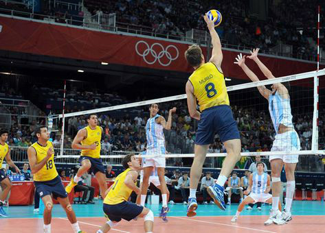
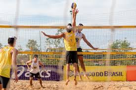

O voleibol ou o vôlei, é um esporte que se pratica entre duas equipes de 12 jogadores, o jogo é´praticado em uma quadra retangular (ela pode ser aberta ou fechada). A quadra é dividida por uma rede que é colocada verticalmente sobre uma linha central.
O vôlei é jogado com uma bola e inclui diversos passes com as mãos. O objetivo principal é jogar a bola por cima da rede assim fazendo ela cair no chão do lado adversário.
Principais regras do vôlei são:
O vôlei de quadra é formado por duas equipes com 6 jogadores em cada. No total, são 12 jogadores. Existem ainda 6 jogadores reserva. Além do vôlei de quadra, há também o vôlei de praia. Diferente da quadra, o de praia é jogado na areia e contém somente quatro jogadores, sendo dois de cada equipe.
O voleibol surgiu nos Estados Unidos em 1895. Seu criador foi o estadunidense William George Morgan (1870-1942). Na época, Morgan era chefe de Educação Física da “Associação Cristã de Moços” (ACM) em Massachusetts.Sua ideia era criar um esporte que tivesse pouco impacto e contato físico entre os adversários, com o intuito de evitar lesões.
Primeiramente, o esporte foi chamado de “mintonette” e, pouco depois, de “volley ball”. Cinco anos após sua criação, o jogo foi levado para o Canadá e, mais tarde, conquistou outros países do mundo.Na década de 40, o voleibol já era reconhecido mundialmente. Sendo assim, em 1947, em Paris, na França, foi fundada a Fédération Internationale de Volleyball (FIVB) - Federação Internacional de Voleibol, em português. Esse órgão é até hoje responsável por coordenar e organizar as atividades relacionadas com esse esporte.Em 1949, aconteceu o primeiro campeonato mundial de voleibol para homens na Checoslováquia, no qual a Rússia saiu campeã. Três anos mais tarde, esse campeonato já incluiu o voleibol para mulheres, com vitória para o Japão.A partir de 1964, o vôlei se tornou um esporte olímpico, o qual permanece até os dias atuais. Hoje ele possui muitas equipes e adeptos pelo mundo.